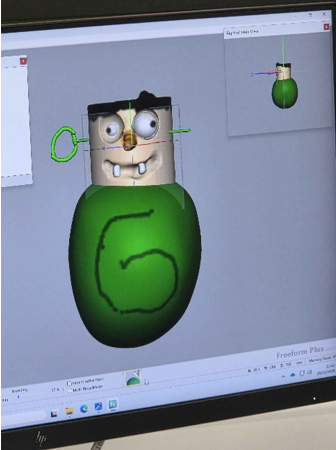
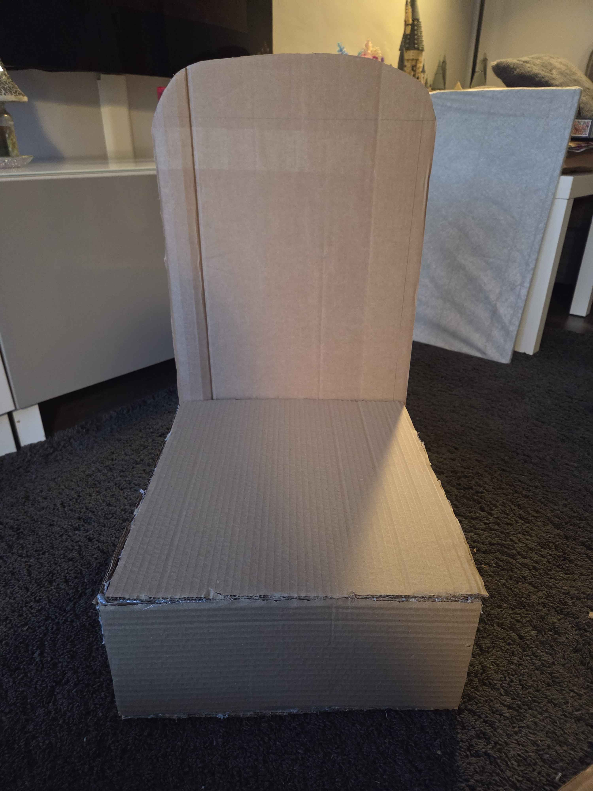
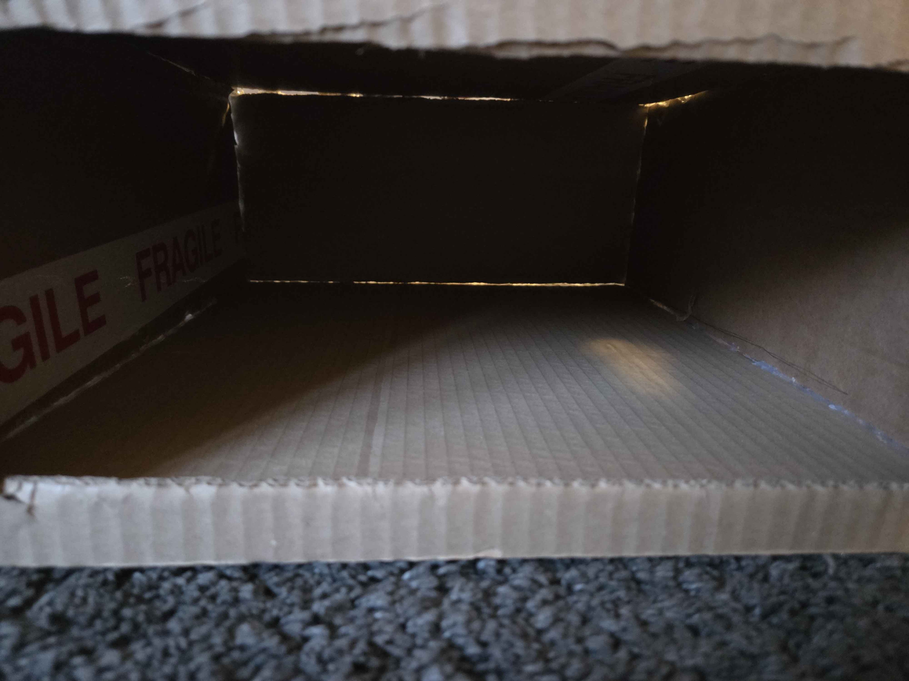

On the 20th April 2026 the first print was started in the 3D factory. The chosen material for the prototype was PP (Polypropylene) it is a durable material
that is often used for buckets and washing machines, this makes it perfect for this use case as we know that is an ideal material to use around water and
won’t fatigue quickly. However, on the 29th of April, the print failed. This was as a result of the PP filament being old and dried out. This caused the
many layers to not be even and eventually they failed. Given that this was close to the deadline a solution needed to be found quickly. The group considered
making the print smaller and doing it with PLA, printing it on the robotic 3D printer the university offers, or slicing the print into multiple sections and
combining them postproduction. (Hindle, C, 2026)
Revised Prints
On the 29th of April 2026 was decided that it would be best to keep the original size, as all other components were built to match this size. So, on the 11th May
2026 the group cut the print into sections and printed them individually with the intent on joining them with pins. The material used was PLA, this isn’t the best
option as it can have quite a low strength compared to PP. (The Welding Institute, 2026)
To make the skull easily attachable to the base, on the 2nd May 2026 a frame was added with pipes and a spine. This was going to be 3D printed, however a better
method for this would have been to use steel pipes which would have been sturdy enough to support the weight of the Soapomorph head. These steel pipes could have then
been hidden using an exoskeleton. This part of the design was then further updated on the 5th May 2026 to ensure that the frame matched the base design rather than being
wall mounted. Also, due to geometry errors more pipes were added. If these were to be printed it is likely they would be a failed print as it would be difficult to support
the spine while printing.
Despite the number of issues with designing the 3D models, 3D printing the artefact was the best method as the detail and accuracy would have been even more difficult to
achieve with other methods. For instance, the Haptic Pen was a consideration. Although it allows for complete creative freedom with modelling, it also relies on the ability
to hand model designs accurately. This solution may be viable if it won’t be 3D printed however, if it was going to be 3D printed it would require everything to be very precise
as ensure the print wouldn’t fail. The image below was created during the group session on the Haptic pen. Although very little time was spent creating this, the imperfections
are noticeable, so it would be difficult to create a printable model with this.

Base Construction
On the 18th April 2026 the drawings were turns into a physical prototype. This was done so that the size could be better interpreted and any issues could be resolved before creating
a final prototype. As this was a 3D model to demonstrate the design to the group, cardboard was used as it was cheap and easily available.


Again, there were multiple problems with this design. As discussed previously the size was the biggest problem as the base part of this would not fit onto a sink. It was then suggested
that instead of using it as a soap dispenser it could be a hand sanitizer dispenser. This would mean that the entire structure could either be placed on a table that didn’t disturb
the space of anything or it could be mounted onto a dedicated stand. However, it was again decided that we wanted to continue with our original ideas of it only being a soap dispenser.
Therefore, the design of the base had to be revisited.